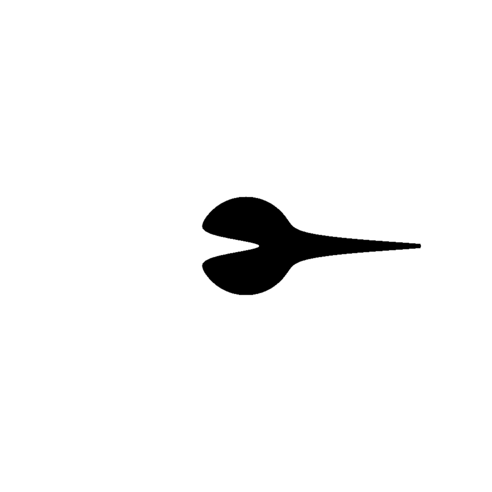

Run of com.github.skac112.klee.painters.Painter2 painter
Time: 22-12-01_02:29:02Git hash: 9c70244
Painter parameters
- frontDecay: 2.247174358300836
- to: Point(0.35403820959913823,0.0)
- sideDecay: 67.17179606684113
- from: Point(0.08954957006362471,0.0)
- backDecay: 22.471743583008358
Render parameters
- X range: <-0.5; 0.5>
- Y range: <-0.5; 0.5>
- nx: 1000, ny: 1000
